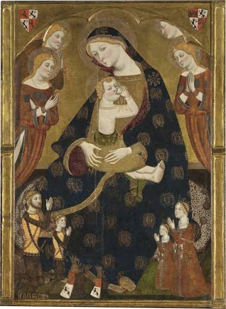
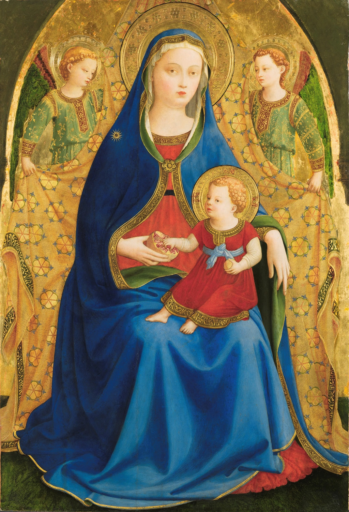

A Museo Nacional del Prado és a Fundación BBVA egy nagyszabású kiállítást mutat be, amely új megvilágításba helyezi azt a folyamatot, ahogyan Itália – jóval a reneszánsz megjelenése előtt – egy mélyreható átalakulás élére állt, amelynek egyik legfontosabb befogadó területe a hispán királyságok világa volt.
A kiállítás kurátora Joan Molina Figueras, az 1500-ig terjedő európai festészeti gyűjtemény vezetője. A tárlaton több mint száz műalkotás látható különféle technikákban és műfajokban.
Ezek a művek lehetővé teszik annak vizsgálatát, hogy a trecento kori itáliai művészet modelljeit miként sajátították el és formálták át a spanyol művészek.
5/26/2026 - 9/20/2026

